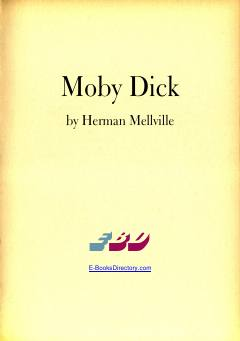

MDOq kitni ovlashga otlangan kema ekipajining dramatik va falsafiy sarguzashtlari.
Herman Melvillening ushbu mashhur romani dengizchi Ishmaelning kapitan Axab boshchiligidagi 'Pekod' kemasida oq kit — Moby Dickni ovlash uchun qilgan safarini hikoya qiladi. Asar insonning tabiat kuchlari bilan kurashi, qasos va taqdir mavzularini chuqur falsafiy nuqtai nazardan yoritib beradi.